第09讲 难点探究专题：数轴上的动点探究问题(6类热点题型讲练)
第09讲 难点探究专题：数轴上的动点探究问题(6类热点题型讲练)
目录
【考点一 数轴上单个动点问题】 1
【考点二 数轴上单个动点规律探究问题】 4
【考点三 数轴上的动点中求定值问题】 6
【考点四 数轴上双动点恒速运动问题】 12
【考点五 数轴上多动点恒速运动问题】 19
【考点六 数轴上中动点新定义型问题】 24

【考点一 数轴上单个动点问题】
例题：（23-24七年级上·广东佛山·期末）已知数轴上 、
、 两点对应的数分别为
两点对应的数分别为 、
、 ，
， 为数轴上一动点，对应的数为
为数轴上一动点，对应的数为 ，若点到、距离的比为
，若点到、距离的比为
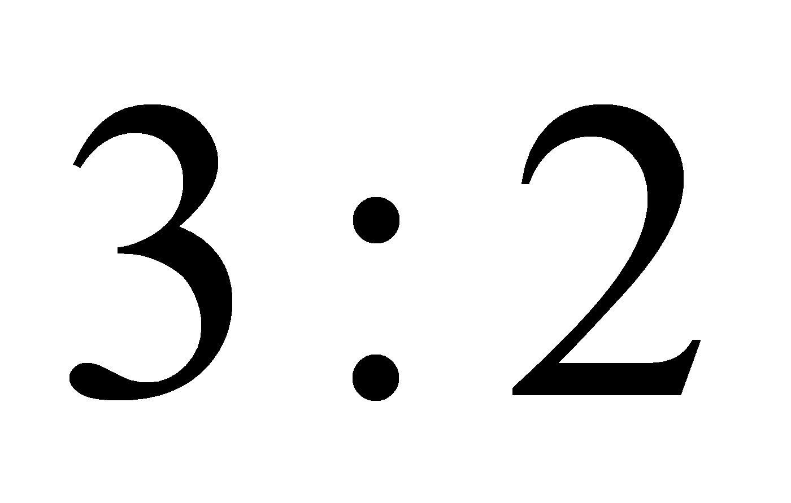
，则点表示的数为 ．【变式训练】
1．（23-24六年级下·黑龙江哈尔滨·期中）如图，在数轴上，点A表示的数是 ，点B表示的数为
，点B表示的数为 ，点P是数轴上的动点．点P沿数轴的负方向运动，在运动过程中，当点P到点A的距离与点P到点B的距离比是
，点P是数轴上的动点．点P沿数轴的负方向运动，在运动过程中，当点P到点A的距离与点P到点B的距离比是 时，点P表示的数是 ．
时，点P表示的数是 ．
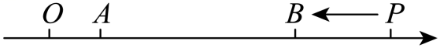
2．（24-25七年级上·江苏·假期作业）阅读与思考
如图，一个点从数轴上的原点开始，先向右移动3个单位长度，再向左移动5个单位长度，可以看出，终点表示的数是 ．参照图中所给的信息，完成填空：
．参照图中所给的信息，完成填空：
已知A，B都是数轴上的点．
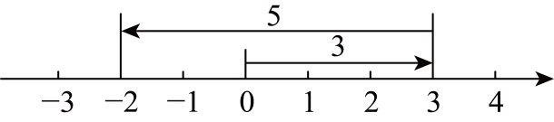
（1）若点A表示数 ．将点A向右移动5个单位长度至点
．将点A向右移动5个单位长度至点 ．则点表示的数是 ；
．则点表示的数是 ；
（2）若点A表示数2，将点A先向左移动7个单位长度，再向右移动 个单位长度至点
个单位长度至点 ，则点表示的数是 ；
，则点表示的数是 ；
（3）若将点B先向左移动3个单位长度，再向右移动6个单位长度，终点表示的数恰好是0，则点B所表示的数是 ．
3．（23-24七年级上·贵州毕节·阶段练习）如图，一个点从数轴上的原点开始，先向左移动 到达点，再向右移动
到达点，再向右移动 到达点，然后再向右移动
到达点，然后再向右移动 到达
到达 点，数轴上一个单位长度表示
点，数轴上一个单位长度表示 ．
．

(1)请你在数轴上标出、、三点的位置，并填空：A表示的数为_______，B表示的数为_______，C表示的数为______．
(2)把点到点的距离记为 ，则
，则 _____
_____ ，
， ______；
______；
(3)若点从（1）中的位置沿数轴以每秒 匀速向右运动，经过多少秒使
匀速向右运动，经过多少秒使 ？
？
【考点二 数轴上单个动点规律探究问题】
例题：（23-24七年级上·广东珠海·期中）如图所示，将圆的周长分为 个单位长度，在圆的等分点处标上数字
个单位长度，在圆的等分点处标上数字 ，
， ，
， ，
， ，先让圆周上数字所对应的点与数轴上的数所对应的点重合，再让圆沿着数轴按逆时针方向滚动，那么数轴上的数
，先让圆周上数字所对应的点与数轴上的数所对应的点重合，再让圆沿着数轴按逆时针方向滚动，那么数轴上的数 将与圆周上的数字 重合．
将与圆周上的数字 重合．
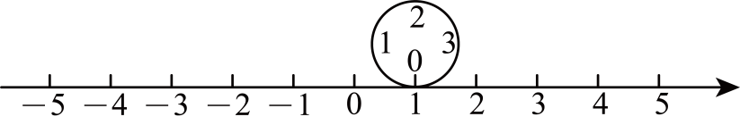
【变式训练】
1．（22-23七年级上·广东佛山·阶段练习）点 从原点向距离原点左侧1个单位的
从原点向距离原点左侧1个单位的 点处跳动，第一次跳动到
点处跳动，第一次跳动到 的中点处，第二次从点跳动到
的中点处，第二次从点跳动到 的中点处，第三次从点跳动到
的中点处，第三次从点跳动到 的中点
的中点 处，如此不断跳动下去，则第4次跳动后，P点（即
处，如此不断跳动下去，则第4次跳动后，P点（即
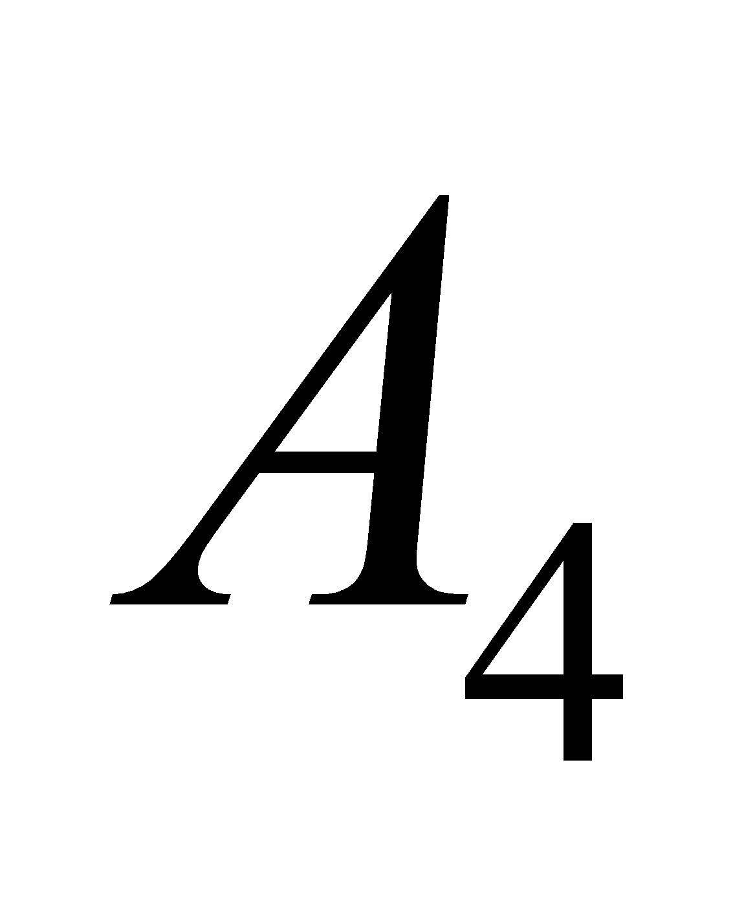
表示的数）为 ．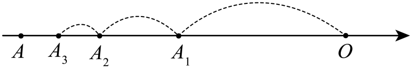
2．（22-23七年级上·江苏无锡·期中）如图，周长为14的长方形 ，其顶点A、B在数轴上，且点A对应的数为
，其顶点A、B在数轴上，且点A对应的数为 ，
， ，若将长方形沿着数轴向右做无滑动的翻滚，经过2023次翻滚后到达数轴上的点P，则P点所对应的数为 ．
，若将长方形沿着数轴向右做无滑动的翻滚，经过2023次翻滚后到达数轴上的点P，则P点所对应的数为 ．
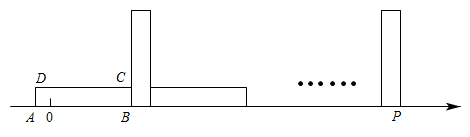
3．（23-24七年级上·安徽合肥·阶段练习）如图，点A在数轴上表示的数为2，且点A做以下移动：第1次点A向左移动2个单位长度至点，第2次从点向右移动4个单位长度至点，第3次从点向左移动6个单位长度至点，第4次从点向右移动8个单位长度至点…，按照这种移动方式进行下去，则：
（1）点 表示的数是 ；
表示的数是 ；
（2）点
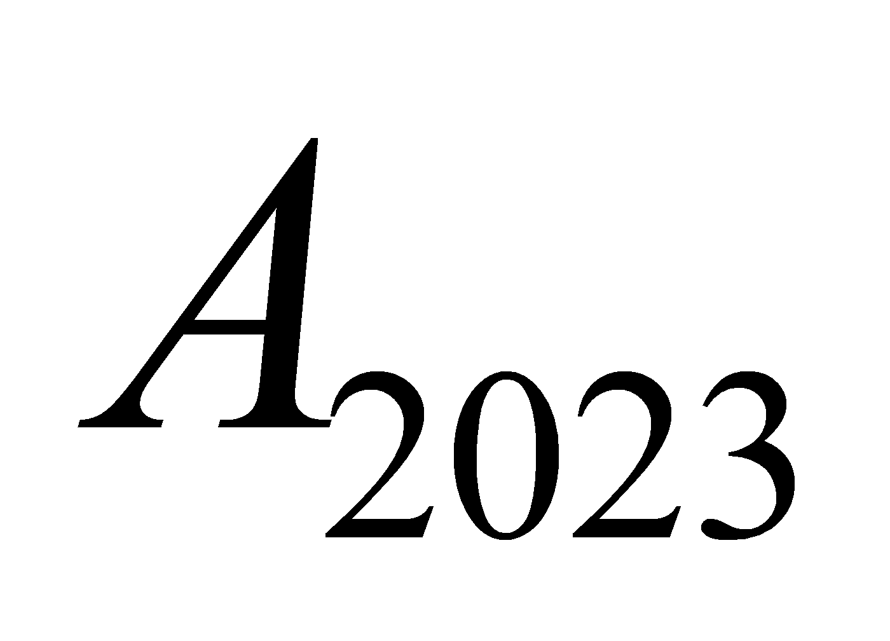
表示的数是【考点三 数轴上的动点中求定值问题】
例题：点 在数轴上对应的数分别为
在数轴上对应的数分别为
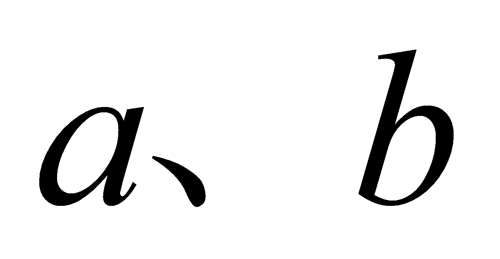
，且满足 ．
．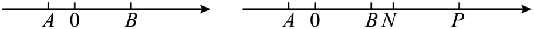
(1)如图，求线段 的长；
的长；
(2)若点C在数轴上对应的数为x，且x是方程
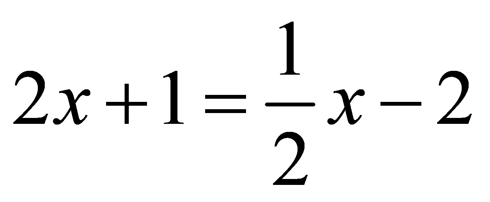
的根，在数轴上是否存在点P使 ，若存在，求出点P对应的数，若不存在，说明理由；
，若存在，求出点P对应的数，若不存在，说明理由；(3)如图，点P在B点右侧， 的中点为
的中点为 为
为 靠近于B点的四等分点，当P在B的右侧运动时，有两个结论：①的值不变；②
靠近于B点的四等分点，当P在B的右侧运动时，有两个结论：①的值不变；②
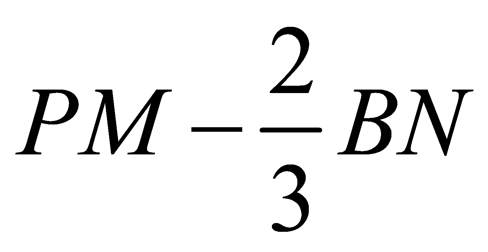
的值不变，其中只有一个结论正确，请判断正确的结论，并求出其值．【变式训练】
1．阅读下面的材料：
如图①，若线段在数轴上，A，B点表示的数分别为a，b ，则线段的长（点A到点B的距离）可表示为
，则线段的长（点A到点B的距离）可表示为 ．
．
请用上面材料中的知识解答下面的问题：
如图②，一个点从数轴上的原点开始，先向左移动1cm到达A点，再向左移动2cm到达B点，然后向右移动7cm到达C点，用1个单位长度表示1cm．
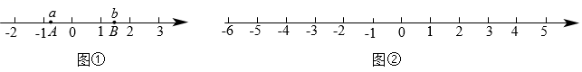
(1)请你在数轴上表示出 、
、 、
、 三点的位置，并直接写出线段
三点的位置，并直接写出线段 的长度；
的长度；
(2)若将点A向右移动 cm，请用代数式表示移动后的点表示的数？
cm，请用代数式表示移动后的点表示的数？
(3)若点B以每秒2cm的速度向左移动至点 ，同时点A，点C分别以每秒1cm和4cm的速度向右移动至点
，同时点A，点C分别以每秒1cm和4cm的速度向右移动至点 ，点
，点 ，设移动时间为t秒，试探索：
，设移动时间为t秒，试探索：
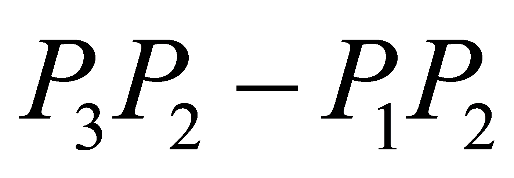
的值是否会随着t的变化而变化？请说明理由．2．如图，一个点从数轴上的原点开始，先向左移动 到达A点，再向右移动
到达A点，再向右移动 到达B点，然后再向右移动
到达B点，然后再向右移动 到达C点，数轴上一个单位长度表示
到达C点，数轴上一个单位长度表示 ．
．
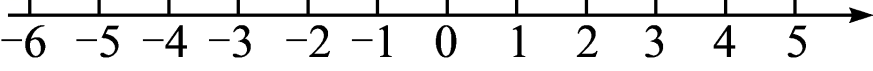
(1)请你在数轴上表示出A，B，C三点的位置；
(2)把点C到点A的距离记为 ，则
，则 _______
_______ ．
．
(3)若点A沿数轴以每秒匀速向右运动，经过多少秒后点A到点C的距离为？
(4)若点A以每秒的速度匀速向左移动，同时点B、点C分别以每秒 、
、 的速度匀速向右移动．设移动时间为t秒，试探索：
的速度匀速向右移动．设移动时间为t秒，试探索：
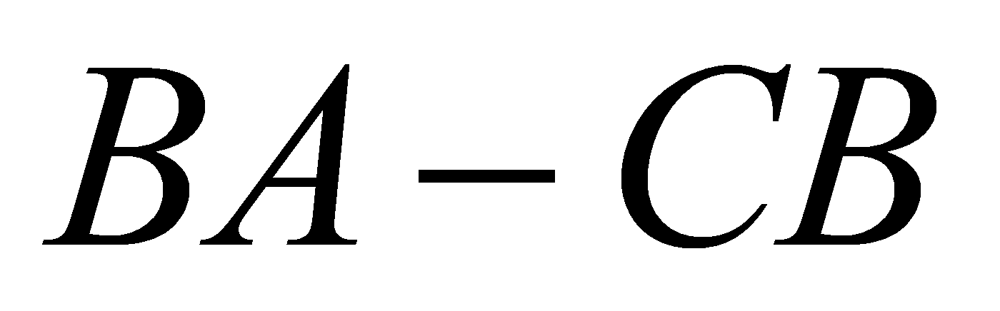
的值是否会随着t的变化而改变？若变化，请说明理由，若无变化，请直接写出的值．3．如图，记数轴上A、B两点之间线段长为， （单位长度），
（单位长度）， （单位长度），在数轴上，点A在数轴上表示的数是
（单位长度），在数轴上，点A在数轴上表示的数是 ，点D在数轴上表示的数是15．
，点D在数轴上表示的数是15．
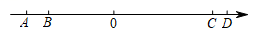
(1)点B在数轴上表示的数是_____，点C在数轴上表示的数是_____，线段BC的长＝_____．
(2)若线段以1个单位长度/秒的速度向右匀速运动，同时线段 以2个单位长度/秒的速度向左匀速运动，当点B与C重合时，点B与点C在数轴上表示的数是多少？
以2个单位长度/秒的速度向左匀速运动，当点B与C重合时，点B与点C在数轴上表示的数是多少？
(3)若线段以1个单位长度/秒的速度向左匀速运动，同时线段以2个单位长度/秒的速度也向左匀速运动，设运动时间为t秒，当 时，M为中点，N为
时，M为中点，N为 中点．
中点．
①若数轴上两个数为a、b，则它们的中点可表示为 ．则点M表示的数为_____，点N表示的数为______．（用代数式表示）
．则点M表示的数为_____，点N表示的数为______．（用代数式表示）
②线段MN的长是否为定值，如果是，请求出这个值；如果不是，请说明理由．
【考点四 数轴上双动点恒速运动问题】
例题：（23-24七年级上·吉林长春·阶段练习）如图，数轴上的单位长度为1， 两点表示的数是互为相反数；
两点表示的数是互为相反数；
(1)点表示的数是______，点表示的数______．
(2)数轴上一个动点先向左移动2个单位长度，再向右移动5个单位到达点 ，若点表示的数是1，则点所表示的数是______．
，若点表示的数是1，则点所表示的数是______．
(3)在数轴上，点 为坐标原点，若点
为坐标原点，若点 点分别以2个单位长度/秒和0.5个单位长度/秒的速度向右运动，当两点同时运动时，设运动时间为
点分别以2个单位长度/秒和0.5个单位长度/秒的速度向右运动，当两点同时运动时，设运动时间为 秒
秒 ．
．
①点表示的数为______；点表示的数为______．（用含的式子表示）
②当为何值时，点点 点三点之间恰好有一个点到其他两个点的距离相等？
点三点之间恰好有一个点到其他两个点的距离相等？
【变式训练】
1．（23-24七年级上·四川宜宾·期末）如图，数轴的原点为，在数轴上有、两点，点对应的数是 ，点对应的数是1，动点、
，点对应的数是1，动点、 同时从、出发，分别以3个单位/秒和1个单位/秒的速度沿着数轴正方向运动，设运动时间为秒（
同时从、出发，分别以3个单位/秒和1个单位/秒的速度沿着数轴正方向运动，设运动时间为秒（ ）．
）．

(1) 两点间的距离是 ；
两点间的距离是 ；
(2)当 时，动点对应的数是 ，动点对应的数是 ；
时，动点对应的数是 ，动点对应的数是 ；
(3)当运动时间为秒时，用含的代数式表示出点和点所对应的数；
(4)当
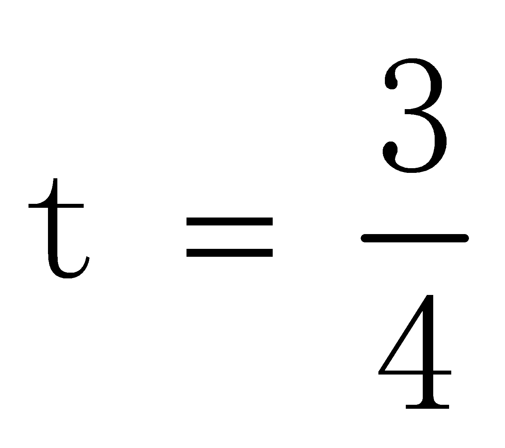
时，点是否为线段 的中点？
的中点？2．（23-24七年级上·吉林长春·期中）如图，点 均在数轴上，点所对应的数是，点在点的右边，且距点
均在数轴上，点所对应的数是，点在点的右边，且距点 个单位长度，点
个单位长度，点 是数轴上的两个动点．
是数轴上的两个动点．
(1)求出点所对应的数；
(2)当点到点的距离之和是 个单位长度时，求出此时点所对应的数；
个单位长度时，求出此时点所对应的数；
(3)若点分别从点出发，均沿数轴向左运动，点每秒运动 个单位长度，点
个单位长度，点 每秒运动
每秒运动 个单位长度．若点先出发秒后点出发，当两点相距个单位长度时，直接写出此时点分别对应的数．
个单位长度．若点先出发秒后点出发，当两点相距个单位长度时，直接写出此时点分别对应的数．
3．（21-22七年级上·福建福州·期末）如图，已知点A，B，C是数轴上三点，O为原点．点C对应的数为6， ，
， ．
．
(1)求点A，B对应的数；
(2)动点P，Q分别同时从A，C出发，分别以每秒6个单位和3个单位的速度沿数轴正方向运动．M为 的中点，N在线段
的中点，N在线段 上，且
上，且 ，设运动时间为
，设运动时间为 ．
．
①求点M，N对应的数（用含t的式子表示）；
②t为何值时， ．
．
4．（23-24七年级上·河北沧州·期末）如图，已知点、、是数轴上三点，为原点．点对应的数为， ，
， ．
．
(1)则点对应的数是 ，点对应的数是 ；
(2)动点、分别同时从、出发，分别以每秒 个单位和个单位的速度沿数轴正方向运动．在线段上，且
个单位和个单位的速度沿数轴正方向运动．在线段上，且 ，在线段上，且
，在线段上，且 ，设运动时间为．
，设运动时间为．
①求点、对应的数（用含的式子表示）
②猜想 的长度是否与的大小有关？如果有关请你写出用表示的代数式；如果无关请你求出的长度．
的长度是否与的大小有关？如果有关请你写出用表示的代数式；如果无关请你求出的长度．
5．（23-24七年级上·广东韶关·期中）如图，已知数轴上的点 表示的数为6，
表示的数为6， 是数轴上一点，且
是数轴上一点，且 ．动点
．动点 从点出发，以每秒6个单位长度的速度沿数轴向左匀速运动，设运动时间为
从点出发，以每秒6个单位长度的速度沿数轴向左匀速运动，设运动时间为
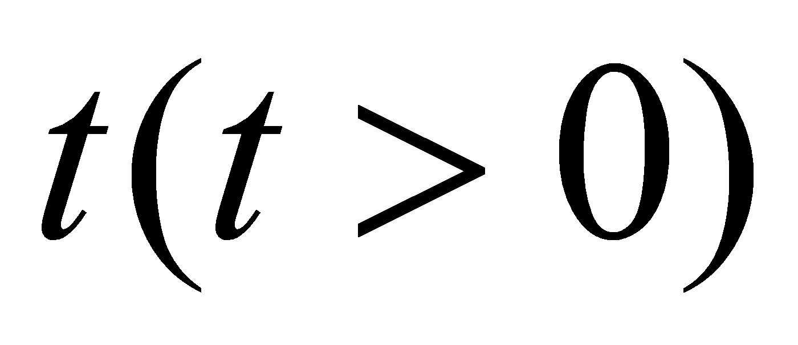
秒．(1)写出点表示的数__________，点表示的数__________（用含 的代数式表示）；
的代数式表示）；
(2)动点 从点出发，以每秒4个单位长度的速度沿数轴向左匀速运动，若点、同时出发，点运动几秒时追上点，并求出此时表示的数；
从点出发，以每秒4个单位长度的速度沿数轴向左匀速运动，若点、同时出发，点运动几秒时追上点，并求出此时表示的数；
(3)若为 的中点，
的中点， 为
为 的中点．点在运动的过程中，线段
的中点．点在运动的过程中，线段 的长度是否发生变化？若变化，请说明理由；若不变，请你画出图形，请求出线段的长．
的长度是否发生变化？若变化，请说明理由；若不变，请你画出图形，请求出线段的长．
【考点五 数轴上多动点恒速运动问题】
例题：（23-24七年级上·陕西西安·期中）点 在数轴上表示的数分别为
在数轴上表示的数分别为 ，且满足
，且满足
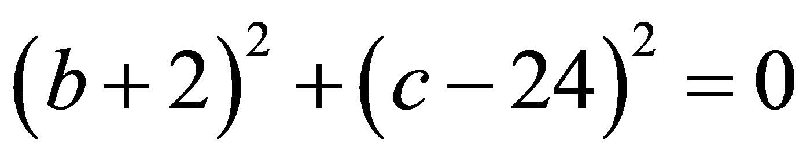
，多项式 是五次四项式．
是五次四项式．(1) 的值为_________，
的值为_________， 的值为_________，
的值为_________， 的值为_________．
的值为_________．
(2)若数轴上有三个动点 ，分别从点开始同时出发在数轴上运动，速度分别为每秒1个单位长度、7个单位长度、3个单位长度． 其中点向左运动，点
，分别从点开始同时出发在数轴上运动，速度分别为每秒1个单位长度、7个单位长度、3个单位长度． 其中点向左运动，点 向右运动，点
向右运动，点 先向左运动，遇到点后回头再向右运动，遇到点后又回头再向左运动，…，这样直到点遇到点时三点都停止运动，求点所走的路程；
先向左运动，遇到点后回头再向右运动，遇到点后又回头再向左运动，…，这样直到点遇到点时三点都停止运动，求点所走的路程；
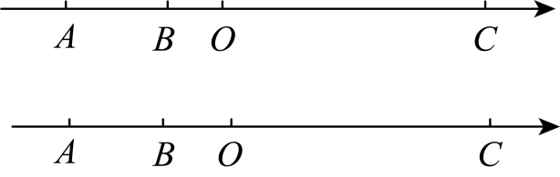
(3)已知点 为数轴上一点，它表示的数为
为数轴上一点，它表示的数为 ，求
，求 的最小值，并写出此时的取值．
的最小值，并写出此时的取值．
【变式训练】
1．（23-24七年级上·广东广州·期中）阅读：如图，已知数轴上有、、三个点，它们表示的数分别是 ，
， ，
， ．到的距离可以用
．到的距离可以用 表示，计算方法：
表示，计算方法： ，或
，或 ．根据阅读完成下列问题：
．根据阅读完成下列问题：
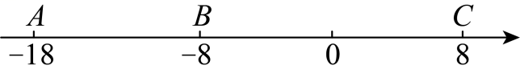
(1)填空： ，
， ．
．
(2)若点以每秒 个单位长度的速度向左运动，同时，点和点分别以每秒
个单位长度的速度向左运动，同时，点和点分别以每秒 个单位长度和
个单位长度和 个单位长度的速度向右运动，试探索：到的距离与到的距离的差（即
个单位长度的速度向右运动，试探索：到的距离与到的距离的差（即 ）的值是否随着时间的变化而改变？请说明理由．
）的值是否随着时间的变化而改变？请说明理由．
(3)现有动点、 都从点出发，点以每秒个单位长度的速度向右移动，当点移动
都从点出发，点以每秒个单位长度的速度向右移动，当点移动 秒时，点才从点出发，并以每秒
秒时，点才从点出发，并以每秒 个单位长度的速度向右移动．设点移动的时间为秒（
个单位长度的速度向右移动．设点移动的时间为秒（ ），直接写出、两点间的距离
），直接写出、两点间的距离 （用含的代数式表示）．
（用含的代数式表示）．
2.已知数轴上两点A、B对应的数分别是6,−8，M、N、P为数轴上三个动点，点M从A点出发，速度为每秒2个单位，点N从点B出发，速度为M点的3倍，点P从原点出发，速度为每秒1个单位．
(1)若点M向右运动，同时点N向左运动，求多长时间点M与点N相距46个单位？
(2)若点M、N、P同时都向右运动，求多长时间点P到点M，N的距离相等？
(3)当时间t满足t1<t≤t2时，M、N两点之间，N、P两点之间，M、P两点之间分别有47个、37个、10个整数点，请直接写出t1，t2的值．
3．（23-24七年级上·天津滨海新·期中）已知：是最小的正整数，且 满足
满足 ，请回答问题：
，请回答问题：
(1)请直接写出
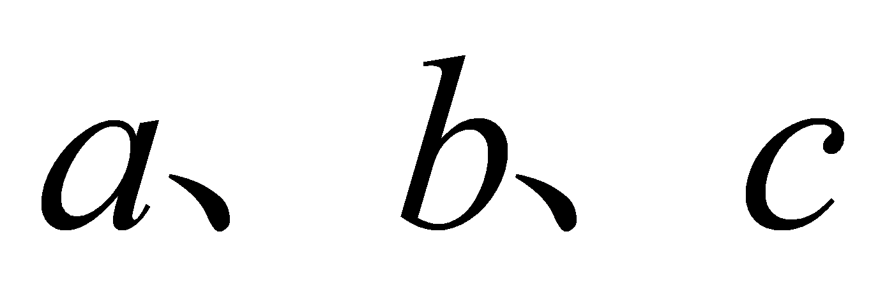
的值． ，
， ，
， ；
；(2)所对应的点分别为，点P为一动点，其对应的数为x，点P在B、C之间运动时，请化简式子：
(3)在（1）（2）的条件下，点开始在数轴上运动，若点A以每秒 个单位长度的速度向左运动，同时，点B和点
个单位长度的速度向左运动，同时，点B和点 分别以每秒
分别以每秒 个单位长度和
个单位长度和 个单位长度的速度向右运动，假设经过
个单位长度的速度向右运动，假设经过 秒钟过后，若点B与点之间的距离表示为
秒钟过后，若点B与点之间的距离表示为 ，点A与点B之间的距离表示为
，点A与点B之间的距离表示为 ．请问：
．请问： 的值是否随着时间的变化而改变？若变化，请说明理由；若不变，请求其值．
的值是否随着时间的变化而改变？若变化，请说明理由；若不变，请求其值．
【考点六 数轴上中动点新定义型问题】
例题:（2024七年级上·全国·专题练习）定义：若， ，C为数轴上三点，若点到点的距离是点到点B的距离倍，我们就称点是【，B】的美好点．
，C为数轴上三点，若点到点的距离是点到点B的距离倍，我们就称点是【，B】的美好点．
例如：如图，点表示的数为，点表示的数为．表示的点到点的距离是，到点的距离是，那么点是【，】的美好点；又如，表示的点到点的距离是，到点的距离是，那么点D就不是【，】的美好点，但点是【，】的美好点．
如图2，，为数轴上两点，点所表示的数为 ，点所表示的数为
，点所表示的数为
(1)点 ，
， ，
， 表示的数分别是
表示的数分别是 ，
， ，
， ，其中是【，】美好点的是 ；写出【，】美好点所表示的数是 ．
，其中是【，】美好点的是 ；写出【，】美好点所表示的数是 ．
(2)现有一只电子蚂蚁从点开始出发，以个单位每秒的速度向左运动．当为何值时，，和中恰有一个点为其余两点的美好点？
【变式训练】
1．（23-24七年级上·福建福州·期中）在数轴上有，两点，点表示的数为 ．对点给出如下定义：当
．对点给出如下定义：当
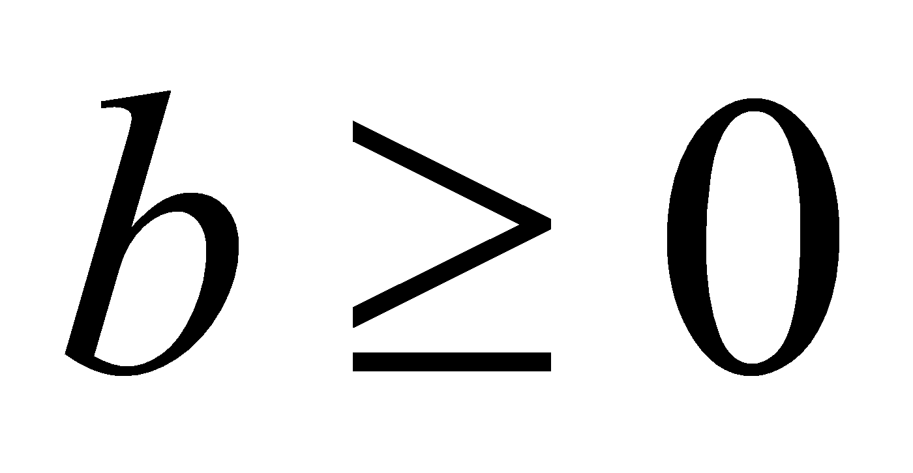
时，将点向右移动3个单位长度，得到点；当 时，将点向左移动
时，将点向左移动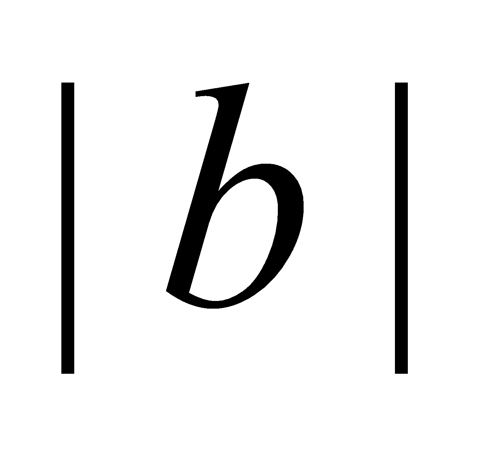
个单位长度，得到点．称点为点关于点的“联动点”．如图，点表示的数为 ．
．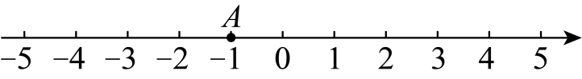
(1)在图中画出当 时，点关于点的“联动点”；
时，点关于点的“联动点”；
(2)点从数轴上表示的位置出发，以每秒1个单位的速度向右运动．点从数轴上表示5的位置同时出发，以相同的速度向左运动，两个点运动的时间为秒．
①点表示的数为__________（用含的式子表示）；
②是否存在，使得此时点关于点的“联动点”佮好与原点重合？若存在，请求出的值；若不存在，请说明理由．
2．（23-24七年级上·河南郑州·阶段练习）如图，数轴上A、B两点表示的数分别是和3，将这两点在数轴上以相同的速度同时相向运动，若A、B分别到达M、N两点，且满足 （k为正整数），我们称A、B两点完成了一次“准相向运动”．
（k为正整数），我们称A、B两点完成了一次“准相向运动”．
(1)A、B两点之间的距离为
(2)若A、B两点完成了一次“准相向运动”．
①当 时，M、N两点表示的数分别为 ， ；
时，M、N两点表示的数分别为 ， ；
②当k为任意正整数时，求M、N两点表示的数（用含字母k的式子表示）．
3．（23-24七年级上·福建三明·阶段练习）数轴上有A，B，C 三点，给出如下定义：若其中一个点与其它两个点的距离恰好满足2倍的数量关系，则称该点是其它两个点的“关联点”.
例：如图1所示，数轴上点A，B，C 所表示的数分别为1，3，4，因为 ，所以称点B 是点A，C的“关联点”．
，所以称点B 是点A，C的“关联点”．
图1
(1)如图2所示，点A表示数 ，点B 表示数1，下列各数2，4，6所对应的点分别是C1，C2，C3其中是点A，B 的“关联点”的是 ;
，点B 表示数1，下列各数2，4，6所对应的点分别是C1，C2，C3其中是点A，B 的“关联点”的是 ;
图2
(2)如图3所示，点A 表示数 ，点B 表示数15，P 为数轴上一个动点：
，点B 表示数15，P 为数轴上一个动点：
①若点P 在点B 的左侧，且P 是点A，B 的“关联点”，求此时点P 表示的数；
②若点P 在点B 的右侧，点P，A，B 中，有一个点恰好是其它两个点的“关联点”， 请求出此时点P 表示的数.
图3